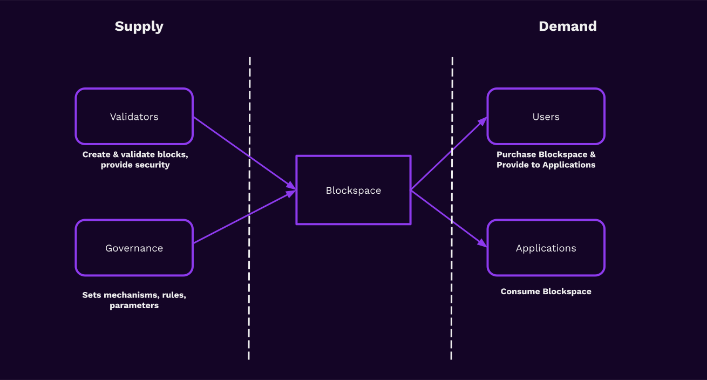
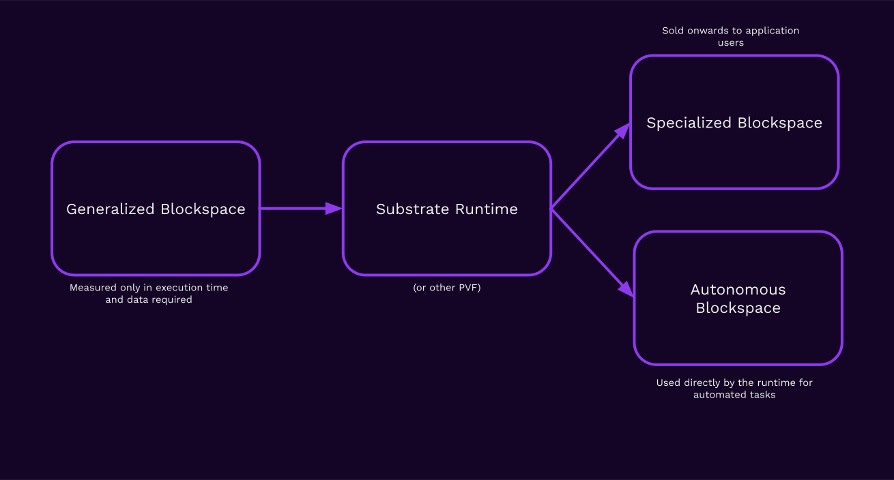
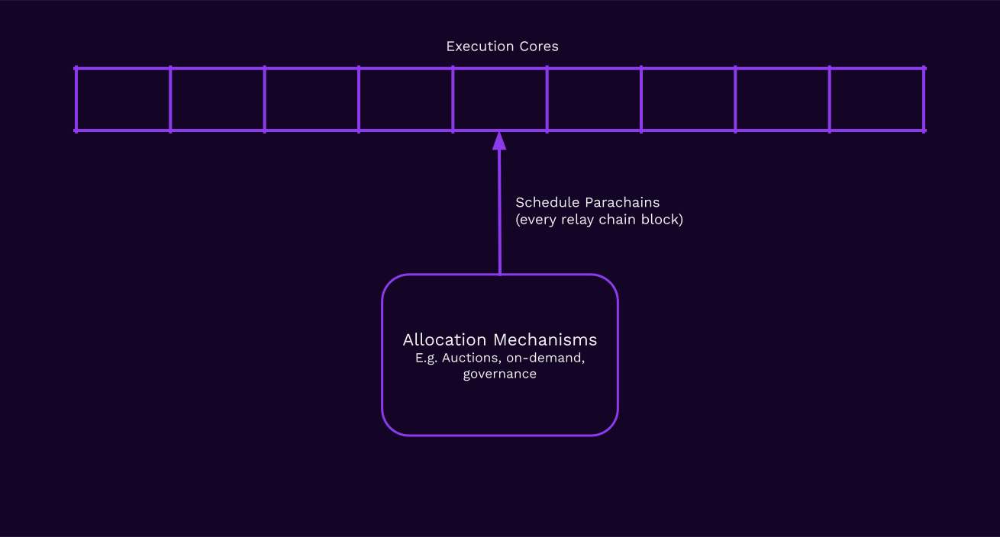
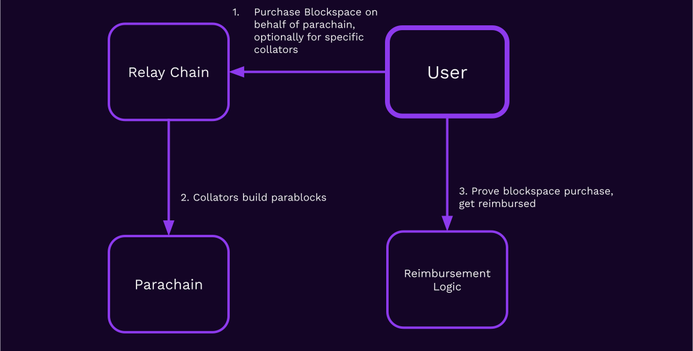

<!DOCTYPE html>
<html lang="en">

<head>
  <meta charset="utf-8" />
  <meta name="viewport" content="width=device-width, initial-scale=1.0, maximum-scale=1.0, user-scalable=no" />

  <title>Blockspace: The Product of Polkadot</title>
  <link rel="icon" href="./../../../assets/favicon.svg" />
  <link rel="shortcut icon" href="./../../../assets/favicon.png" />
  <link rel="stylesheet" href="./../../../dist/reset.css" />
  <link rel="stylesheet" href="./../../../dist/reveal.css" />
  <link rel="stylesheet" href="./../../.././assets/styles/PBA-theme.css" id="theme" />
  <link rel="stylesheet" href="./../../../css/highlight/shades-of-purple.css" />

  <link rel="stylesheet" href="./../../.././assets/styles/custom-classes.css" />

</head>

<body class="site">
  <header class="site-header">
    <!-- This logo is a link only on the watching server, not the production build -->
    <a href="">
      
    </a>
  </header>
  <main class="reveal">
    <article class="slides">
      <section  data-markdown><script type="text/template">

## Blockspace

In this lesson, we will cover:

<pba-flex center>

1. Blockspace as a concept and historical interpretations
1. Blockspace as a product of blockchains
1. The importance of efficient allocation of blockspace
1. The design space of blockspace allocation mechanisms within Polkadot

</pba-flex>

<aside class="notes"><p>Deep Dive Article is <a href="https://www.rob.tech/polkadot-blockspace-over-blockchains/">https://www.rob.tech/polkadot-blockspace-over-blockchains/</a></p>
</aside></script></section><section  data-markdown><script type="text/template">
## Blockspace: Definition

> Blockspace is the capacity of a blockchain to finalize and commit operations.
</script></section><section  data-markdown><script type="text/template">
## Measuring Blockspace

Blockspace can be measured in a few different ways:

<pba-flex center>

1. Size: Bytes used by transactions (e.g. Bitcoin)
1. Computation: Gas used by transactions (e.g. Ethereum)
1. Data: Size of data required to validate transactions (PoV size in Polkadot)
1. Or some combination of the above

</pba-flex>
</script></section><section  data-markdown><script type="text/template">
## Blockspace Markets

Fee markets in blockchains are examples of blockspace markets.

The blockchain sells blockspace on-demand, and users pay fees in order to utilize the blockspace.
</script></section><section  data-markdown><script type="text/template">
## Blockspace Markets

Parachain slot auctions are another example of a blockspace market.

Instead of selling blockspace on-demand, blockspace is sold in bulk up-front with an auction mechanism.
</script></section><section  data-markdown><script type="text/template">
## Blockspace: Supply and Demand


</script></section><section  data-markdown><script type="text/template">
## Blockspace in Ethereum: GasToken

GasToken (https://GasToken.io) was an early Blockspace Futures Market on Ethereum.

Ethereum provides a gas refund for storage slots being cleared in smart contract execution.

By "pre-buying" storage when gas is cheap and getting the refund when gas is expensive, users can perform blockspace arbitrage in Ethereum!
</script></section><section  data-markdown><script type="text/template">
## Evaluating Blockspace

3 Properties of Blockspace:

<pba-flex center>

1. Quality: How secure is the blockspace? What are the economic guarantees of finality?
1. Availability: How much blockspace is _available_ on the market?
1. Flexibility: How many applications can the blockspace be used for?

</pba-flex>
</script></section><section  data-markdown><script type="text/template">
## Polkadot's Blockspace: Quality

Polkadot's Execution Sharding guarantees that all blockspace generated by Polkadot is highly secure, with economic guarantees of finality under the 33% BFT assumption.
</script></section><section  data-markdown><script type="text/template">
## Polkadot's Blockspace: Availability

With sharding, Polkadot has the capability to produce large amounts of blockspace. This is another lens to view the blockchain scaling problem through: creating more blockspace.
</script></section><section  data-markdown><script type="text/template">
## Polkadot's Blockspace: Flexibility

Polkadot provides blockspace in a highly flexible format due to key design choices:

<pba-flex center>

1. WebAssembly: This turing-complete language allows all kinds of computation to be done.
1. PoV Blobs: Unopinionated about storage formats or access patterns.
1. Head-Data blobs: Parachains can use any header format they like and don't even have to be blockchains, strictly speaking.

</pba-flex>
</script></section><section  data-markdown><script type="text/template">
## Substrate: The Blockspace Transformer

Since Polkadot provides highly flexible blockspace, it can be transformed into a variety of different, more specialized blockspace products.


</script></section><section  data-markdown><script type="text/template">
## Principles of Blockchain Application Development

<pba-flex center>

1. Acquire generalized blockspace (from Polkadot, from validators directly)
1. Specialize blockspace for a particular use-case or requirement
1. Downstream demand drives upstream demand.

</pba-flex>

<aside class="notes"><p>By (3) I mean that the amount of demand for (2) should inform the amount to which the application does (1).</p>
</aside></script></section><section  data-markdown><script type="text/template">
## Problem: Ghost Chains

It's quite common for chains to produce mostly empty blocks.

This is a problem: chains are buying more blockspace than they need!

They are paying validators to do nothing of value, and this will lead to depreciation of their token.
</script></section><section  data-markdown><script type="text/template">
## Solution: Acquire Blockspace on-demand

Blockchains as needing to produce blocks every X seconds or minutes.

Blockchains should only produce blocks when they have a good reason to.

The main reason this is not done is because there are no good primitives for it.
</script></section><section  data-markdown><script type="text/template">
## Polkadot's Architecture: Execution Cores


<aside class="notes"><p>Cores, by metaphor, are like CPU cores. Code and data are scheduled onto them by the &quot;Operating System&quot; and then executed.</p>
</aside></script></section><section  data-markdown><script type="text/template">
## Polkadot's Architecture: Execution Cores


</script></section><section  data-markdown><script type="text/template">
## Long-term vs. on-demand

On-demand are analogous to "spot" instances and slot auctions are analogous to "reserved" instances in cloud computing.

Spot instances may be more expensive if overall demand is high, but help to soothe load.
</script></section><section  data-markdown><script type="text/template">
## Coretime

Within Polkadot, we measure the amount of blockspace that an application can use in _coretime_.

Just like a CPU and OS, there is a scheduler that multiplexes many<br/> different processes onto execution cores.

Coretime is acquired through either primary or secondary marketplaces.

## Elastic Scaling (planned upgrade)

What if parachains could acquire not just _one_ execution core at a time, but multiple?

Parachains would then be able to _elastically scale_ during periods of higher demand.

<aside class="notes"><p>This scaling can occur as a result of the property that in Polkadot, parablock state transitions are completely encapsulated and validation of block X+1 can occur in parallel with validation of block X.</p>
<p>However, the parablocks still must be <em>authored</em> sequentially by collators, and for that reason this can only be used to scale up to the maximum throughput of collators authoring blocks.</p>
</aside></script></section><section  data-markdown><script type="text/template">
## Reimbursement Layer: Status Quo


</script></section><section  data-markdown><script type="text/template">
## Reimbursement Layer: Generalizing



<aside class="notes"><p>User could be a collator itself, or perhaps just someone fulfilling a market need (blockspace arbitrage!)</p>
</aside></script></section><section  data-markdown><script type="text/template">
## Reimbursement Layer: Use Cases

<pba-flex center>

1. Pay Collators _somewhere other_ than the chain they build upon
1. Pay Collators in stablecoins or other tokens
1. Tokenless parachain
1. Parachain Launch Pad (e.g. pay out of "credits" on some other system)
1. Generalized Collator Pool (plug and play, no need to run nodes specific to parachain)

</pba-flex>
</script></section><section  data-markdown><script type="text/template">
## Blockspace and Interoperability

In interoperable blockchain applications, the application is only as good as the weakest chain it relies upon.

It is important not to mix high-quality blockspace with low-quality, due to toxicity risks.
</script></section><section  data-markdown><script type="text/template">
## Ephemeral Chains

Is there any reason a blockchain should run forever?

Why not create blockchains that run for a limited period of time, e.g. to run some specific protocol or computation, and then conclude?
</script></section><section  data-markdown><script type="text/template">
## Coretime Futures Markets

With the right core-level primitives, it will be possible to transfer claims on future coretime.

Secondary markets can emerge, perhaps using NFTs, on parachains themselves, to facilitate the market for future coretime.

This will create an efficient market and price discovery for coretime via arbitrage.
</script></section><section  data-markdown><script type="text/template">
## Future Coretime Allocation Mechanisms

If coretime is the "product" of Polkadot, then allocation mechanisms are the "packaging".

RFC-1 proposes mechanisms for bulk coretime to be sold off, renewed, split up, resold, and transferred.
</script></section><section  data-markdown><script type="text/template">
## Blockspace: Conclusions

<pba-flex center>

1. Blockspace is an conceptual distillation of blockchain resources
1. Blockspace provides new lenses on the scheduling and lifecycle of blockchains
1. Polkadot measures blockspace allocation using coretime
1. Efficient allocation of blockspace will be critical as Web3 systems scale to serve 8 billion people.
1. Polkadot's architecture is blockspace-centric, not blockchain-centric, and provides many options for builders to use its product.

</pba-flex>
</script></section><section  data-markdown><script type="text/template">
<!-- .slide: data-background-color="#4A2439" -->

# Questions
</script></section>
    </article>
  </main>

  <script src="./../../../dist/reveal.js"></script>

  <script src="./../../../plugin/markdown/markdown.js"></script>
  <script src="./../../../plugin/highlight/highlight.js"></script>
  <script src="./../../../plugin/zoom/zoom.js"></script>
  <script src="./../../../plugin/notes/notes.js"></script>
  <script src="./../../../plugin/math/math.js"></script>

  <script src="./../../../assets/plugin/mermaid.js"></script>
  <script src="./../../../assets/plugin/mermaid-theme.js"></script>

  <script src="./../../../assets/plugin/chart/chart.js"></script>
  <script src="./../../../assets/plugin/chart/chart.min.js"></script>

  <script src="./../../../assets/plugin/tailwindcss.min.js"></script>

  <script>
    function extend() {
      var target = {};
      for (var i = 0; i < arguments.length; i++) {
        var source = arguments[i];
        for (var key in source) {
          if (source.hasOwnProperty(key)) {
            target[key] = source[key];
          }
        }
      }
      return target;
    }

    // default options to init reveal.js
    var defaultOptions = {
      controls: true,
      progress: true,
      history: true,
      center: true,
      transition: 'default', // none/fade/slide/convex/concave/zoom
      slideNumber: true,
      mermaid: {
        startOnLoad: false,
        logLevel: 3,
        theme: 'base',
        themeVariables: {
          primaryColor: purple,
          primaryTextColor: white,
          primaryBorderColor: pink,
          lineColor: pink,
          secondaryColor: lightPurple,
          tertiaryColor: lightPurple,
        },
      },
      chart: {
        defaults: {
          color: 'lightgray', // color of labels
          scale: {
            beginAtZero: true,
            ticks: { stepSize: 1 },
            grid: { color: "lightgray" }, // color of grid lines
          },
        },
        line: { borderColor: ["#ccc", "#E6007A", "#6D3AEE"], "borderDash": [[5, 10], [0, 0]] },
        bar: { backgroundColor: ["#ccc", "#E6007A", "#6D3AEE"] },
      },
      plugins: [
        RevealMarkdown,
        RevealHighlight,
        RevealZoom,
        RevealNotes,
        RevealMath,
        RevealMermaid,
        RevealChart
      ]
    };

    // options from URL query string
    var queryOptions = Reveal().getQueryHash() || {};

    var options = extend(defaultOptions, {"width":1400,"height":900,"margin":0,"minScale":0.2,"maxScale":2,"transition":"none","controls":true,"progress":true,"center":true,"slideNumber":true,"backgroundTransition":"fade"}, queryOptions);
  </script>


  <script>
    Reveal.initialize(options);
  </script>
</body>

</html>
